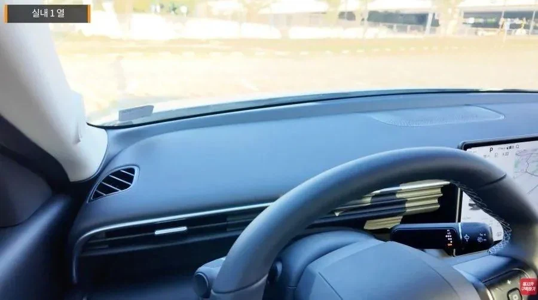
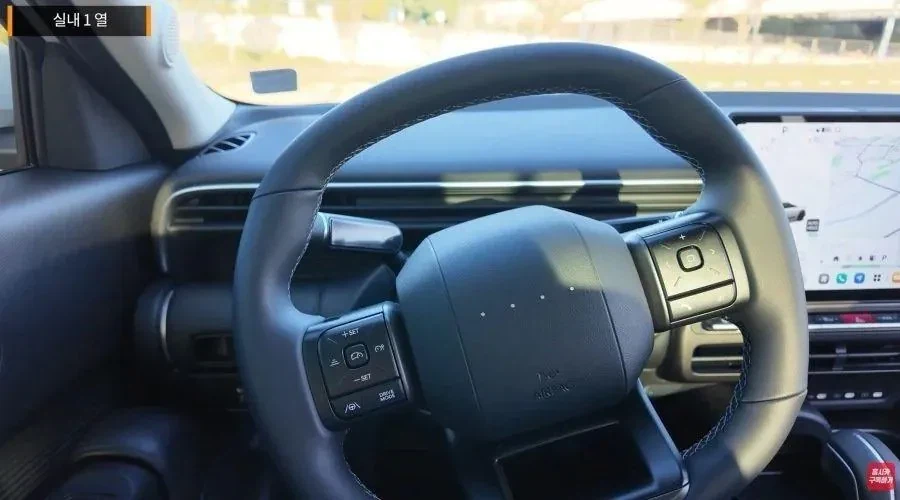
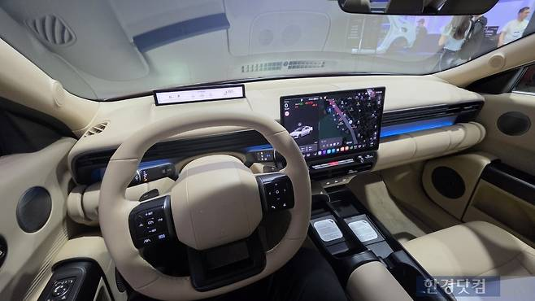

운전선 쪽에 계기판 달려면 350,000원 옵션 넣어야 함.
안 넣을시 테슬라처럼 센터 디스플레이로 확인해야 함.

옵션 넣으면 이렇게 앙증맞은거 달아줌.


운전선 쪽에 계기판 달려면 350,000원 옵션 넣어야 함.
안 넣을시 테슬라처럼 센터 디스플레이로 확인해야 함.

옵션 넣으면 이렇게 앙증맞은거 달아줌.
https://www.dogdrip.net/728765891
여기에 내가 탄 아반떼 cn8 시승후기 있어. 단점위주로 얘기함 현행 플레오스는 실패작이여
Cn8 이 아니라 c8 인 것 같은데 이 시팔같은 차
앞으로 바퀴 핸들 창문 다 옵션이겠다 ㅋㅋ
병신들 이럴거면 씨발 알리 테무에 부품 하나씩 따로팔아라 ㅋㅋㅋ 이게 뭔짓거리냐
ccnc는 신이다
존나 욕하는거보니까 현기차 주가 오르겠네 ㅋㅋㅋㅋ 딱 1년전에 삼성 망한다는 소리 커뮤에 도배됐었는데 ㅋㅋㅋㅋ
핸들쪽에 달린 계기판보다 중앙에 달린게 더 안전엔 좋다고 하던데
옵션으로 쳐 넣는건 욕 쳐먹어야지
안전에 좋은건 절대 아니고 테슬라가 중앙에 넣은 이유는
FSD나 오토파일럿 쓸건데 계기판이 왜 필요해? 기 때문임
근데 현대차는 둘다 안되면서 계기판 없앤게 웃음벨임
중앙에 달린 계기판이 테슬라가 처음이 아니야
전방이 시야에 벗어나는 시간이
핸들쪽에 달린것보다 중앙에 달린게 더 짧아서 안전하다는 연구도 있고 했음
ㅋㅋㅋㅋㅋㅋㅋㅋ하여간 미국놈들 미개한짓 따라하기는 세계 어느 나라보다 빨러 아주
범퍼에 헤드라이트 박을 때 알아봤어야함 ㅋㅋ
HUD 옵션은 없음?
생기다 말은 계기판 달아주는 것보다 HUD가 나을 것 같은데
CN8은 없음
아반떼는 가성비로 타는건데
시발 그냥 기계식달아줘
요즘 트렌드 따라가는데 뭐 좋넼ㅋㅋㅋㅋ 테슬라처럼 기어도 화면서 변속하면 더 좋아할듯 ㅋㅋ
크기는 상관없음 어차피 핵심정보는 다 들어오니까 근데 시발 옵션질은ㅋㅋㅋ
나중엔 스마트 핸들 옵션 이런거 집어넣고 옵션 선택 안하면 핸들도 안 줄 판이네
테슬람들 계기판없는거 존나빨아재끼던데 왜 문제야
걔네는 fds가 되잖아....
근데 이건 뺄 명분이 없는데도 그냥 뺀거고...
아예 빼면 몰라 옵션으로 달 수가 있네???
그거는 말도안되지 그럼 전방주시는 왜 의무적으로 하게만듬?
딴데보면 FSD 바로풀림
아예 운전에서 손 떼세요 가 아님
그냥 계기판 만들 기술력이 없어서 뺀거야
버튼하나도없는거 그거 만들기술력이 없어서 뺀거임
원가절감 플러스 만들 기술력없으니까 다 빼버리고 센터콘솔만 남긴거임
뭔 계기판 기술이 없어 ㅋㅋㅋㅋ 다른 테슬라에 계기판있는것도 많은데 ㅋㅋㅋ 그냥 원가절감이지
그러니까 테슬라는 명분이있는데 아반떼의 명분은 뭐냐고 ㅋㅋㅋㅋ 없으면 아예없던가 옵션으로 빼두는건 소비자의 선택을 위한거임???
테슬라는 FSD랑 오토파일럿이 있으니까 계기판 필요없는거고 ㅋㅋㅋ
말도안되는 소리인건 알지? 완전자율화 의무차도 아니고 FSD 구매율도 꼬라박았는데 다 샀다는 기준으로 만들었다고 진짜 그 이유면 FSD무조건 다 쓰게 해줬어야댐
오토파일럿은 현대 HDA2보다 못해 그거때문에 계기판을 없앤건 아님
테슬라가 계기판, 버튼, 레버등등
하나도 안달려서 나온건 그냥 기술력이 없어서야
그거 하나하나 회로 선 지나가는 공간 뽑는것도, 버튼감 조작감, 계기판 위치 배선 전원연결 최적화 이런거에 대한 기술력이 없음
차를 만들어본적이없으니 그 기술력이 없어
돈들여서 개발해야되는데 머스크가 상황이 안좋아서 개발비 싹다 없애고 그냥 센터콘솔 1개로 퉁쳐서 급하게 출시했는데 그게 감성영역에서 통해서 대박난거지
너처럼 자율주행이 가능할지도모르니까 뺐다? 너무억지야
뭔소리임 ㅋㅋㅋ FSD 다 쓰게 해주는데 미국은 도로가 쾌적해서 필요없는 사람이 많으니까 안쓰는거고
오토파일럿이 HDA2보다 못하다는건 진짜 말도안되고 ㅋㅋㅋ
기술력이 없어서 계기판이 없는게 아니라니깐 ㅋㅋㅋ 계기판이 어려운 기술도 아니고 80년대도 있던거야...
그냥 계기판 필요없으니까 없애서 비용절감하겠다는게 테슬라의 원칙인거다
그래서 쓰잘데기 없는거 다 없애고 깔끔하게 만드는거고
반대로 현대는 계기판 필요한데 없애서 옵션질 하는거고 ㅋㅋㅋㅋㅋ
알리에서 비슷한거 사면 10만원도 안할 듯
안전을 위해서라도 제발 전방주시와 계기판 혹은 디스플레이가 가능한 가깝게 해라 법적으로 좀!
안그래도 요즘 도로위에 ㅂㅅ들 넘치던데 억하면 바로 죽는게 도로 위다
근데 저거 배치 자체로도 개뜬금없는 갑툭튀라 ㅈㄴ 구리기도 함
투싼꺼는 좀 낫던데
아날로그 계기판도 없는겨? 차가 점점 장난감처럼 되가네